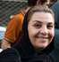
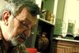
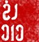
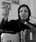
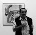
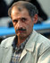
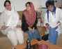

- 18 آذر 1388

گفتگو: الناز انصاری و دلارام علی
- 9 مرداد 1388

- 20 خرداد 1388
گفتگو : آیدا سعادت ، پروین اردلان
- 16 خرداد 1388
استدلال ها و نظرات جمیله کدیور درباره کمپین یک میلیون امضا: حرکت از پایین با گفت و گو از بالا حساسیت کمتری ایجاد می کند
گفتگو الناز انصاری
- 13 خرداد 1388

بازداشت جلوه جواهری و کاوه مظفری کاملا غیرقانونی است
- 23 فروردین 1388
در سالگرد مرگ دعا دختری که قربانی خشونت ناموسی شد : کجاست سرزمین من ؟
ژینا مدرس گرجی / تارا نجد احمدی
- 17 فروردین 1388
روایت زندان
مصاحبه خدیجه مقدم با عالیه اقدام دوست در زندان اوین
- 2 فروردین 1388

مروری بر سی سال پیش در این ایام
گفتگو : الناز انصاری- نفیسه آزاد
- 8 اسفند 1387
گفتگو با قاضی ربیحاوی نویسنده و مارا لاکووانت کارگردان نمایش قانون مذکر
گفتگو: آزاده فرامرزیها
- 27 بهمن 1387
تجربه بازداشت
گفت و گو الناز انصاری با نفیسه آزاد درباره بازداشتگاه وزرا و تجربه زندگی با زنان زندان
- 19 آبان 1387
منیژه حکمت ، کارگردان زندان زنان و سه زن :
گفتگو : آیدا سعادت - آزاده فرامرزی ها/ عکس :نوشین جعفری
- 8 مهر 1387
محمد یعقوبی نویسنده و کارگردان تئاتر: تئوريزه شدن انفعال ديگر بس است ما نياز به صراحت داريم
گفتگوی نوشین جعفری و آزاده فرامرزی ها با محمد یعقوبی
- 18 شهریور 1387

گفتگو با صالح نجفی
مازیار سمیعی
- 5 مرداد 1387
گفتگو با گیتی پورفاضل:
شیرین مومنی
- 31 تیر 1387

گفتگو با شيرين عبادي
آيدا سعادت
- 28 تیر 1387
رزا قراچورلو:
مریم مالک
- 20 تیر 1387

گفتگو با بهمن جلالي عکاس مستند
راحله عسگري زاده
- 29 خرداد 1387
هانا عبدي به 5 سال حبس در يك شهرستان مرزي محكوم شد
- 25 خرداد 1387
گفتگو با نسرين ستوده
نسرین ستوده
- 22 خرداد 1387
گفتگو با شیرین عبادی
شیرین عبادی
- 8 خرداد 1387
حسین اکبری، فعال کارگری:
هژیر پلاسچی، مازیار سمیعی
- 19 اردیبهشت 1387
فعال سندیکایی:
گفتگو با ابراهیم مددی/ هژیر پلاسچی
- 20 فروردین 1387
گفتگو:آيدا سعادت
- 21 اسفند 1386
جنبش زنان در ایران، گفتگویی با پروفسور والنتاین مقدم/م. رجبی
- 3 بهمن 1386
مصاحبه : نسيم خسروي
- 16 آذر 1386

- 1 آذر 1386
آيدا سعادت
- 30 مهر 1386

تنظیم: سمیه فرید
- 26 مهر 1386
گفتگو با مسئول انجمن زنان آذرمهر کردستان درباره فعالیت های روناک صفازاده و انجمن آذرمهر
- 17 مهر 1386
گفتگو با نعمت احمدی وکیل دادگستری
میرا قربانی فر